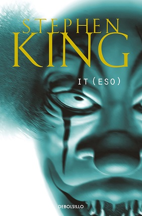
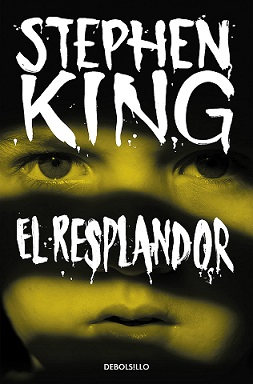
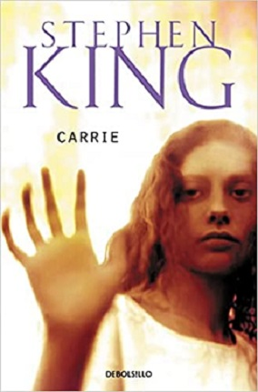

A dia de hoy, si uno piensa en un novelista de terror, lo mas posible es que sea Stephen King quien se le venga a la mente. Actualmente ha vendido 350 millones de ejemplares de sus multiples novelas, ademas de llevado algunas de ellas a la pantalla y de haber ganado mas de 30 premios por ellas. Pero, de sus 61 novelas, ¿cuales son las que mas destacan?
1-) IT (ESO)
Esta novela de terror, publicada el 15 de septiembre de 1986, cuenta la historia de siete adolescentes: Bill, Beberly, Ben, Eddie, Richie, Stanley y Mike. Ellos, tras el asesinato del hermano pequeño de Bill, se ven forzados a enfrentarse a un ente que lleva en la tierra desde hace millones de años, el cual toma la forma de los mayores miedos de uno para devorarlo despues. La novela narra tanto la historia de los personajes de niños como de adultos, haciendo saltos en el tiempo y flashbacks. Lo curioso de la novela es que lo que mas miedo, o mas bien incomodidad, genera de ella es el pueblo, Derry, y la gente que vive en el, pues segun el libro, Derry es una tierra que atrae el mal.
2-) RESPLANDOR
El resplandor es una novela de terror psicologico y suspense, publicada el 28 de enero de 1977, que cuenta la historia de Jack Torrance, su mujer y su hijo. A este le ofrecen un trabajo temporal cuidando de un hotel en lo alto de las montañas, hotel en el que su hijo pequeño, gracias a un don llamado el “resplandor”, comienza a sentir y a ver los espiritus que habitaban el lugar. Simultaneamente, su padre, Jack, va perdiendo la cordura poco a poco, volviendose agresivo, lo que lleva a su mujer a huir. Esta tiene una secuela, El Doctor Sueño, publicado el 2 de septiembre de 2013.
3-) CARRIE
Carrie fue la primera novela epistolar que Stephen publicó, el 5 de abril de 1974. Esra fue una novela bastante censurada debido a lo grotesca que podía resultar, llegando a prohibirse en paises como Finlandia. Esta novela nos cuenta la historia Carrie, una adolescente que soporta los maltratos de su madre y el bullying en la escuela. Con el desarrollo de la historia descubrimos que durante su adolescencia, Carrie adquiere unos poderes telequinéticos los cuales usará en un futuro para vengarse de aquellas personas que la humillaron y trataron mal en aquel entonces.